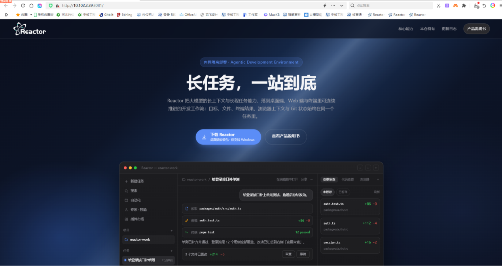

灵犀智伴 · 产品说明书
灵犀智伴（Reactor） 是面向办公与专业工程场景的 Agent 智能体桌面客户端，由数字化管理科自主设计研发。产品围绕「文档生成 — 智能操作 — 自动办公 — 合规审查 — 数据分析 — 图纸识别 — 安全合规」构建能力闭环，支持数据本地化与商网运行，核心功能无需外网即可使用。

选择你要看的版本
本说明书按使用场景分为两册，内容各自独立，按需进入即可。
| 版本 | 适合谁 | 主要内容 |
|---|---|---|
| 日常办公版 | 写材料、做报表、整理文件、处理图纸的同事 | 快速开始、界面导览、文档智能生成、自动办公与技能、数据分析、文件与图纸处理、产物管理 |
| 审查版 | 做合规审查、一致性比对、图纸核查的同事 | 审查能力总览、审查流程、文档合规审查、CAD 图纸审查、结果与报告、实践建议 |
第一次使用，建议先读日常办公版 · 快速开始；有审查需求再进审查版。
能力一览
| 能力 | 一句话说明 |
|---|---|
| 文档智能生成 | 用自然语言生成与修改 Word / Excel / PPT / PDF，断网也能出件 |
| 本地电脑智能操作 | 作为个人电脑的专属助手，整合本地资源与软件工具协同操作 |
| 自动办公 | 定时 / 周期执行填报、汇总、报表与提醒 |
| 技能与智能体 | 内置文档、数据、图纸、检索、审查等技能插件，可自建专属技能 |
| 文档合规审查 | 多格式文件合规审查、一致性比对、原文高亮与报告输出 |
| 数据分析 | 多源数据汇总、图表生成、异常分析与趋势预测 |
| 图纸识别 | CAD 批量抽表、文字智能修改、图面内容核查 |
| OCR 识别 | 中英文离线识别，扫描件 / 照片 / 截图转可编辑文本 |
| 安全合规 | 数据本地存储与脱敏，契合内网与信息安全要求 |
功能随需求持续拓展，欢迎结合本职工作探索更多用法，并在公测中反馈建议。
使用前提
- 在单位门户获取安装包与版本更新日志；
- 使用个人龙语账号登录，首次登录后按提示修改初始密码；
- 支持 Windows 10，Win7 因底层框架版本限制暂不支持；
- 商网 / 离线环境均可运行，无需外网。
保密提醒
本工具严禁上传和处理涉密文件，AI 生成内容仅供参考，重要结论请人工复核。